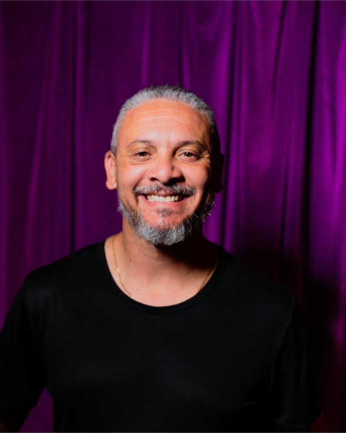

Nossa equipe é formada por especialistas dedicados, comprometidos em oferecer as melhores soluções em Libras para sua empresa ou projeto.
Valorizamos a qualidade, a acessibilidade e o respeito em cada atendimento, garantindo uma comunicação clara e eficiente.
A Inside Libras é uma empresa dedicada a facilitar a comunicação por meio da Língua Brasileira de Sinais (Libras). Com tecnologia inovadora e uma equipe apaixonada, oferecemos soluções personalizadas para inclusão e acessibilidade.
Nosso compromisso é transformar a experiência de comunicação entre ouvintes e surdos, promovendo inclusão social, autonomia e respeito para todos.



© 2025 Rafa MarquesCom mais de 10 anos de experiência como intérprete de Libras, Thiago Quintano atua diretamente na promoção da acessibilidade em diversos contextos, incluindo eventos, instituições de ensino e ambientes corporativos. É formado em Letras Libras, Processos Gerenciais e possui certificação pelo Prolibras.
Sua trajetória é marcada pelo compromisso com a inclusão e pela excelência na mediação comunicativa entre surdos e ouvintes.
Promover a inclusão e acessibilidade para pessoas surdas e com deficiência auditiva, garantindo a comunicação como direito fundamental.
Ser referência nacional em acessibilidade comunicacional, construindo uma sociedade inclusiva com igualdade de oportunidades para todos.
Inclusão, acessibilidade, respeito, comprometimento, inovação e defesa dos direitos humanos.
Interpretação de Libras para eventos, reuniões e palestras, promovendo inclusão e compreensão para pessoas surdas.
Transformamos o visual em narrativa para que pessoas com deficiência visual tenham experiências completas e imersivas.
Capacitação em acessibilidade e inclusão para empresas e indivíduos. Transforme seu ambiente em um espaço inclusivo.
Cursos de Libras, audiodescrição e acessibilidade para iniciantes e profissionais. Conte com uma equipe experiente.
Desde 1995, quando aprendi Libras, tive o privilégio de mergulhar nesse universo. O que inicialmente era um novo conhecimento logo se transformou em uma paixão. A cada sinal aprendido, meu encantamento pela riqueza e importância dessa língua para a inclusão só aumentava.
Mesmo antes de empreender, eu já alimentava o desejo de criar algo voltado à acessibilidade. A ideia de uma empresa sempre esteve presente, mesmo que ainda distante da prática.
Em 2019, durante mentorias em Libras para uma amiga, surgiu a pergunta que mudou tudo: “Por que você não cria sua própria empresa para oferecer cursos, mentorias e consultorias em Libras?” Essa provocação foi o empurrão que eu precisava. A partir desse momento, transformei paixão em propósito. Nascia minha empresa, com o objetivo de promover acessibilidade em empresas, eventos e diversos ambientes.
Desde então, sigo me dedicando para tornar a Libras cada vez mais acessível. O foco é transformar barreiras em pontes, promovendo conexões reais e construindo um mundo mais inclusivo — um sinal de cada vez.
A Inside Libras é fruto de uma caminhada de amor, escuta e coragem. Estamos prontos para construir novas pontes e transformar vidas — uma sinalização de cada vez.
Comunicação sem barreiras para pessoas surdas.
Oferecemos intérpretes qualificados para eventos, aulas, reuniões e produções audiovisuais. Com Libras, sua comunicação alcança mais pessoas e torna sua marca inclusiva de verdade.

“A intérprete foi essencial para que eu pudesse participar plenamente do evento. Me senti realmente incluída!”
— Carla, pessoa surda
“Ter Libras disponível nas nossas reuniões transformou o clima da empresa. Inclusão virou parte da cultura.”
— Lucas, gerente de RH
Dê vida às imagens com palavras para quem não pode ver.
A audiodescrição transforma o conteúdo visual em experiências acessíveis para pessoas com deficiência visual. Ideal para vídeos, espetáculos, exposições e muito mais.

“A audiodescrição trouxe uma nova dimensão para o meu espetáculo. Agora todos podem entender cada detalhe.”
— Mariana, produtora cultural
“O roteiro foi muito bem feito, a narração é clara e ajuda muito na compreensão do conteúdo visual.”
— João, pessoa com deficiência visual
Capacite sua equipe para promover acessibilidade real.
Realizamos treinamentos práticos, mentorias individuais e formações in-company para que empresas e profissionais atuem com inclusão e empatia.

“O treinamento foi muito produtivo e transformador para nossa equipe. Aumentou a conscientização e a empatia.”
— Ana, coordenadora de RH
“A mentoria ajudou a empresa a implementar práticas acessíveis de forma clara e prática.”
— Rafael, empresário
Aprenda Libras, audiodescrição e acessibilidade com especialistas.
Nossos cursos são desenvolvidos para iniciantes e profissionais. Aprenda com materiais atualizados, dinâmicas práticas e uma equipe comprometida com a inclusão.
“O curso foi muito didático e o conteúdo facilitou meu aprendizado e aplicação prática.”
— Fernanda, aluna
“Recomendo para todos que querem se especializar em acessibilidade com profissionais experientes.”
— Eduardo, profissional de inclusão

Serviço: Capacitação em acessibilidade e Libras
"Quero expressar minha mais sincera gratidão ao Prof. Thiago Quintano, que foi fundamental na minha jornada de aprendizado da Língua Brasileira de Sinais (Libras) e na minha preparação para me tornar intérprete. Com sua didática clara, paciência admirável e um profundo respeito pela comunidade surda, o professor Thiago foi muito além do ensino técnico. Ele transmitiu valores, compartilhou experiências e acreditou no meu potencial mesmo nos momentos em que eu mesma tinha dúvidas. Seu comprometimento e paixão pelo que faz são inspiradores. Hoje, atuo como intérprete com segurança e consciência da responsabilidade que essa função carrega — e muito disso devo ao excelente trabalho que ele realizou durante minha formação. Também ao que o ConfeitaLibras se tornou, graças a mentoria do professor Thiago durante o nascimento e crescimento do projeto. Recomendo a Inside Libras com todo entusiasmo a quem deseja aprender Libras de forma séria, respeitosa e com excelência. Ele é, sem dúvida, um educador que marca vidas. Muito obrigada por tudo, professor!"
Serviço: Curso básico de Libras.
"Muito obrigado Thiago, mesmo com a correria do trabalho eu consegui desenvolver bastante e foi muito importante não só para minha vida profissional mas para o desenvolvimento social e pessoal também, desejo ainda mais sucesso para sua empresa, vcs são incríveis e tem um propósito grandioso. Deus abençoe 🙏🏼✨"
Preencha o formulário abaixo e retornaremos o mais breve possível.